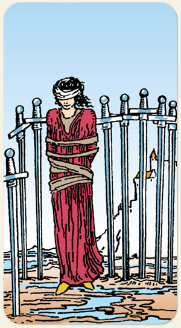

Rotina e produtividade, diferentes formas de encarar o mundo podem se tornar um desafio, receio de exposição. Na figura, uma mulher amarrada e vendada, espadas fincadas no chão à sua volta, pequenas poças de água aos seus pés podem representar poucas emoções ou poucos recursos, ao fundo está uma vila indicando que a mulher não está perto de sua casa, mas em exílio, mostrar as ideias e permitir que elas sejam avaliadas por outras pessoas.
Positivo: Não ter medo dos desafios e da exposição, coragem interior, capacidade de resolver desafios, encontrar respostas, caminhos, soluções, não focar no lado desafiador e nos medos, encarar a si mesmo e não fugir de sua própria sombra.
Negativo: Paralisação pelo medo, ideia de inferioridade, ser tomado por falsas verdades, crenças limitantes, ser seu próprio algoz, opressão, cerceamento, não falar ou fazer o que pensa por medo da opinião pública, estar de mãos atados.
Símbolos: Mulher Vendada, Ataduras, Espadas Fincadas, Lama, Colina, Castelo.
Cores: Cor, Cor, Cor, Cor.